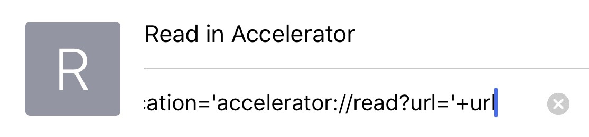

Step 2
- Tap the Bookmarks button in the toolbar.
- Tap Edit. Select the Open in Velocity bookmark that you created in Step 1 to edit.
- Tap its URL, tap the X to clear it, tap-and-hold for the magnifying glass, then tap Paste.
It should look like this:

Save the changes by tapping Done.